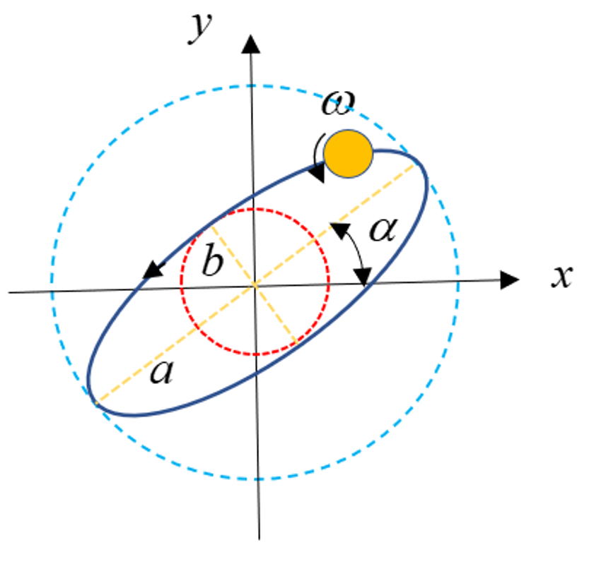

|
|
|


图形
在强迫响应分析中运行基本计算后，可以通过在图形菜单中选择 来显示分析的结果和输出。这基于以下要求：
- 至少有一个文档点位于轴上。
- 转速数量至少为两个。
- 已选择 或 作为计算类型。
常规数据（绘图要求 1、2）：
显示了文档点处以下参数最大值随参考边界转速的变化：
- 涡动轨道长半轴
- 涡动轨道短半轴
- 涡动轨道相位
这些输出与涡动轨道图相关，用于评估柔性轴在不同截面处的变形。图 1 显示了轴中心的典型椭圆轨迹，可用涡动轨道参数来表征。

图 13.1：柔性轴的涡动图
3D 变形：
选择此项可显示系统元件由激励引起的振动和运动。此功能通过在 3D 视图中可视化元件的运动，可提供对系统元件响应的更多深入了解。为此，强迫响应会在每根轴上创建许多截面，并运行后处理器来计算这些截面处的所有相关响应。因此，如果涉及包含许多轴对象的复杂系统，这可能会非常耗时。
动载系数（要求 2、3）：
针对所有活动齿轮副，以参考边界转速为基准绘制动载系数。来自 选项卡中参考边界的参考转速也显示在这里。
啮合接触力：
频域（要求 3）： 绘制了参考边界所有运行转速下所有活动齿轮副的动态啮合接触力幅值。幅值数量等于可区分的激励频率总数。静态接触力的大小还显示在注释窗口中。
时域（要求 3）： 可以绘制参考边界所有运行转速下所有活动齿轮副的动态啮合接触力变化。对于每个齿轮副，X 轴是包含该齿轮副主齿轮的轴的旋转角（或其等效时间长度）。
转速范围（要求 2、3）： 显示了所有活动齿轮副动态啮合接触力的最大值、最小值和峰峰值随参考边界转速的变化。
传动误差（局部轴和公共轴，要求 3）：
传动误差（TE）针对所有活动齿轮副绘制。传动误差由接触分析模块计算，考虑了相邻齿轮副移相角的影响。更详细的解释参见 [6]。在局部轴图中，每个齿轮副的 TE 变化相对于相应主齿轮的旋转角绘制。然而，在全局轴图中，所有活动齿轮副的 TE 相对于作为参考的一个齿轮的旋转角绘制。
动态传动误差：
时域（要求 3）： 显示了参考边界所有运行转速下所有活动齿轮副的动态传动误差变化。对于每个齿轮副，X 轴是包含该齿轮副主齿轮的轴的旋转角（或其等效时间长度）。
转速范围（要求 2、3）： 显示了所有活动齿轮副动态传动误差的最大值、最小值和峰峰值的变化，以参考边界转速为基准。
啮合刚度（要求 3）：
显示了所有活动齿轮副的啮合刚度随旋转角（或其等效时间长度）的变化。
轴承力与力矩：
可以针对所有参考边界运行转速绘制激励频率下的轴承力和扭矩幅值。幅值数量等于可区分的激励频率总数。静态力和力矩的大小还显示在注释窗口中。
可以在参考边界的所有运行转速下绘制轴承力和扭矩随时间或轴旋转角的变化。
转速范围（要求 2）： 可以在所有参考边界运行转速下绘制轴承力和扭矩的最大值、最小值和峰峰值的变化。
坎贝尔图（要求 2）：
在参考边界的所有运行转速（X 轴）下，绘制了动态啮合接触力、轴承力和力矩幅值（以颜色图例格式）及其相关频率（Y 轴）。在坎贝尔图中可以看到以下特性：
- 啮合接触力/轴承力和轴承力矩的幅值（最大值）
- 每个啮合接触力/轴承力和轴承力矩的幅值
- 以 log10 和普通刻度显示
关于轴承力幅值及其 x、y、z 方向分量的最大值和最小值的更多信息，在坎贝尔图的注释窗口中提供。
说明：
- 坎贝尔图的结果基于频域分析。
- 结果的分辨率直接与 相关。因此，重要的是要注意，计算步数应足够高，以反映转速范围内所有可能的临界转速的影响，从而使结果能更清晰地显示。
- 坎贝尔图中的线条数量等于来自齿轮副（取决于谐波数）、不平衡质量和扭矩脉动的不同激励频率的数量。
- 线条以激励频率的相同顺序显示。
- 对于相同的激励频率，结果会重叠。
- 激励谐波的数量会影响由齿轮啮合力和扭矩脉动引起的激励频率的数量。
轴输出：
时域（要求 1）： 可以在参考边界的所有运行转速下绘制文档点处的变形、速度、加速度、力、旋转和弯矩随时间或轴旋转角的变化。
转速范围（要求 1、2）： 可以相对于参考边界转速绘制文档点处变形、速度、加速度、力、旋转和弯矩的最大值、最小值和峰峰值的变化。
一般说明：
取决于在强迫响应界面中选择的 ，某些输出无法生成。为了更清楚地说明这一点，必须考虑以下几点。
弯曲和扭转响应的输出数据：
- 计算所有与弯曲和扭转自由度相对应的响应。
- 动载系数显示沿 PL 的最大动态齿轮啮合力与其静态值之比。
- 计算动态轴承力和力矩、动态轴输出和动态啮合接触力，并将其加到相应的静态值上。
- 动态传动误差显示齿轮啮合位置处的弹簧压缩值，该值产生了计算得到的啮合接触力。
- 由接触分析计算得到的啮合刚度值与轴转速无关。根据要求的谐波数量，每个齿轮副的幅值可以不同。
扭转响应的输出数据：
- 仅计算与扭转自由度相对应的动态响应。
- 动载系数显示最大动态齿轮扭矩与其相应静态扭矩值之比。
- 动态轴承力和力矩为零。只有静态轴承力和力矩显示在图形中。
- 与弯曲自由度（挠度、速度、加速度和力）相关的动态轴输出为零。只有它们的静态值显示在图形中。
- 与扭转自由度（旋转和弯矩）相关的动态轴输出显示在图形中。
- 齿轮啮合输出（啮合接触力、动态传动误差、啮合刚度）仅基于齿轮的扭转激励以及扭矩脉动。不考虑沿压力线（PL）的接触力激励。
Graphics
After running the basic calculation in the forced response analysis, the results and outputs of the analysis can be displayed by selecting in the Graphics menu. This is based on the following requirements:
- At least one documentation point is located on a shaft.
- The number of speeds is at least two.
- or was selected as the type of calculation.
General data (plot requirements No. 1, 2):
Variation of the maximum value of the following parameters at documentation points versus speed of the reference boundary is shown:
- major half axis of whirl orbit
- minor half axis of whirl orbit
- phase of whirl orbit
The outputs are related to the plots of the whirl orbit to assess the deformation of flexible shafts at different sections. Figure 1 shows a typical elliptical path of the shaft center which can be characterized by the whirl orbit parameters.
Figure 13.1: Whirl plot of a flexible shaft
3D deformation:
Select this to display the system elements' vibrations and movement caused by the excitations. This feature can provide more insights to the response of the system`s elements by visualizing their movements in a 3D view. For this purpose, the forced response creates many sections on each shaft and runs the postprocessor to calculate all the relevant responses at these sections. Consequently, it can be very time consuming if complex systems that contain many shaft objects are involved.
Dynamic factor (requirement No. 2, 3):
The dynamic factor is plotted for all active gear pairs with reference to the reference boundary speed. The reference speed of the reference boundary from the tab is also displayed here.
Meshing contact force:
Frequency domain (requirements No. 3): The amplitudes of the dynamic meshing contact force for all active gear pairs at all running speeds of the reference boundary are plotted. Number of amplitudes is equal to the total number of distinguishable excitation frequencies. The amount of static contact force is additionally shown in the comment window.
Time domain (requirements No. 3): Variation of the dynamic meshing contact force for all active gear pairs at all running speeds of the reference boundary can be plotted. For each gear pair, the X axis is the rotation angle (or its equivalent time duration) of the shaft which contains the main gear of that gear pair.
Speed range (requirement No. 2, 3): Variation of the maximum value, minimum value, and peak to peak value of the dynamic meshing contact force for all active gear pairs is shown versus speed of the reference boundary.
Transmission error (local and common axes, requirement No. 3):
The transmission error (TE) is plotted for all active gear pairs. The transmission error is calculated from the contact analysis module by considering the effect of the shift phase angle of successive gear pairs. For a more detailed explanation, see [6]. In the local axis plot, variation of the TE for each gear pair is plotted versus the rotation angle of the corresponding main gear. However, in the global axis plot, the TEs of all active gear pairs are plotted versus the angle of rotation of one gear as the reference.
Dynamic transmission error:
Time domain (requirements No. 3): Variation of the dynamic transmission error for all active gear pairs at all running speeds of the reference boundary is shown. For each gear pair, the X axis is the rotation angle (or its equivalent time duration) of the shaft which contains the main gear of that gear pair.
Speed range (requirement No. 2, 3): The variation of the maximum value, minimum value, and peak to peak value of the dynamic transmission error for all active gear pairs is displayed, with reference to the reference boundary speed.
Meshing stiffness (requirement No. 3):
Variation of the meshing stiffness versus rotational angle (or its equivalent time duration) for all active gear pairs is shown.
Bearing forces and moments:
The bearing forces and torque amplitudes in the excitation frequencies can be plotted for all reference boundary running speeds. Number of amplitudes is equal to the total number of distinguishable excitation frequencies. The amount of static force and moment are additionally shown in the comment window.
Variation of the bearing forces and torques versus time or rotation angle of the shaft can be plotted at all running speeds of the reference boundary.
Speed range (requirement No. 2): The variation of the maximum value, minimum value, and peak to peak value of the bearing forces and torques can be plotted at all reference boundary running speeds.
Campbell diagram (requirement No. 2):
At all running speeds of the reference boundary (X axis), the dynamic meshing contact forces, bearing forces and moments amplitudes (in color-legend format) as well as their associated frequencies (Y axis) are plotted. The following properties can be seen in the Campbell diagram:
- Amplitude of meshing contact force/bearing force and bearing moment (maximum value)
- Amplitude of each meshing contact force/bearing force and bearing moment
- Display in log10 and normal scale
More information about the maximum and minimum values of the bearing force amplitudes and their components in x, y, and z directions is provided in the comment window in the Campbell diagram.
Notes:
- The results of Campbell diagram are based on the frequency domain analysis.
- The resolution of the results is directly related to the . For this reason, it is important to note that the number of calculation steps should high enough to reflect the effect of all possible critical speeds in the speed range, so that the results can be shown more clearly.
- The number of lines in the Campbell diagram is equal to the number of distinct excitation frequencies, from gear pairs (depending on the number of harmonics), unbalanced masses, and torque ripples.
- The lines are shown in the same order of the excitation frequencies.
- For identical excitation frequencies, the results overlapped.
- The number of excitation harmonics influences the number of excitation frequencies due to gear mesh forces and torque ripple.
Shaft outputs:
Time domain (requirements No. 1): Variation of the deformation, velocity, acceleration, force, rotation, and bending moment at documentation points versus time or rotation angle of the shaft can be plotted at all running speeds of the reference boundary.
Speed range (requirement No. 1, 2): Variation of the maximum value, minimum value, and peak to peak value of the deformation, velocity, acceleration, force, rotation, and bending moment at documentation points can be plotted versus speed of the reference boundary.
General remarks:
Depending on the selected in the forced response UI, some outputs cannot be generated. To clarify more this point, the following points have to be considered.
Output data for bending and torsional responses:
- All responses which correspond to the bending and torsional DOFs are calculated.
- The dynamic factor shows the ratio of the maximum dynamic gear mesh force along the PL to their static values.
- The dynamic bearing forces and moments, dynamic shaft outputs, and dynamic meshing contact forces are calculated and added to their corresponding static values.
- The dynamic transmission error shows the spring compression value at gear mesh positions which results in the calculated meshing contact forces.
- The meshing stiffness values, which are calculated from the contact analysis, are independent of the shaft speeds. Depending on the demanded number of harmonics, their amplitudes for each gear pair can be different.
Output data for torsional responses:
- Only the dynamic responses which correspond to the torsional DOF are calculated.
- The dynamic factor shows the ratio of the maximum dynamic gear torques to their corresponding static torque values.
- The dynamic bearing forces and moments are zero. Only the static bearing forces andmoments are shown in the Graphics.
- The dynamic shaft outputs, which are related to the bending DOFs (deflection, velocity, acceleration, and force), are zero. Only their static values are shown in the Graphics.
- The dynamic shaft outputs which are related to the torsional DOF (rotation and bending moment) are shown in the Graphics.
- The gear mesh outputs (meshing contact force, dynamic transmission error, meshing stiffness) are based only on the torsional excitation of the gears as well as torque ripples. No contact force excitation along the Pressure Line (PL) is considered.